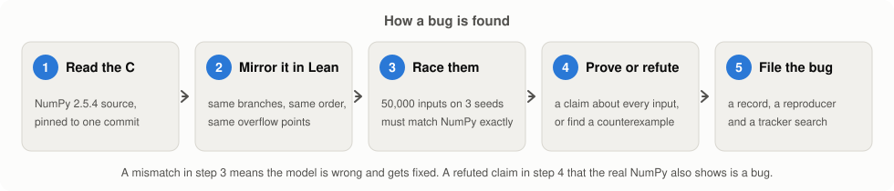
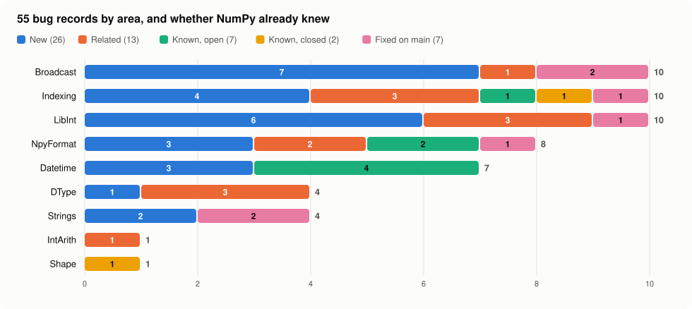

I copied part of NumPy into a proof checker, and it found 55 bugs
November 2026. The code and every bug record are at github.com/pragyaangaur/NumPy-Lean-Check.
Here is one line of NumPy 2.5.4, the current release of the library that most of scientific Python runs on:
>>> import numpy as np
>>> np.bincount([2**63 - 1])
array([], dtype=int64)bincount counts how often each number appears, so its answer should have one slot for every number up to the largest input. For this input the answer should be enormous. NumPy returns an empty array instead, and on the way it writes 8 bytes into memory that it does not own. If you run it in a loop, Python crashes. As far as I could find, nobody had reported this before. A proof found it.
The idea
In late October 2026, Broyojo published python-formalization, which copies CPython into the Lean 4 proof assistant line by line and tests the copy against the real interpreter. Miles Cranmer had started the same thing for Julia a few days earlier. I searched for anyone who had done it for NumPy and found nobody, so on 11 November 2026 I tried it.
Lean is a programming language that also checks proofs. You can write a function in it and run it like any other program. You can also state a claim about every possible input, and Lean only accepts the claim when you give it a proof that it can check step by step. When the claim is false, you prove that instead by giving one input where it fails.
How it works
I did not try to copy all of NumPy. I picked the parts where the logic is integer arithmetic, because integers can be checked exactly and they are where overflow bugs hide. That meant array shapes, indexing, type promotion, dates and times, string search and the .npy file format. In the end this is a few thousand of NumPy's roughly 212,000 lines of C.
Each piece goes through five steps:
- Read the C source of NumPy 2.5.4, pinned to one commit.
- Copy it into Lean with the same branches in the same order. Where the C code can overflow a 64-bit integer, the Lean version wraps at exactly the same place.
- Race the two. A script makes 50,000 random inputs, with extra weight on awkward values such as zero and the edges of
2**63, and checks that the Lean copy and the real NumPy give the same answer for every one. Each test has to pass on three different random seeds. When they disagree, the Lean copy is wrong and gets fixed. - Once the copy matches the library, ask it questions. The claims come from NumPy's own documentation and from comments in its source. A proof covers every possible input, which a test can never do.
- When a claim turns out to be false and the real NumPy shows the same failure, write it up as a bug with a short script that reproduces it.

The bincount bug came out of step 4. The documentation promises that every input is a valid slot in the output. The C code computes the length as the largest input plus one, and for 2**63 - 1 that addition overflows to a negative number. A later step replaces the negative length with zero, and then the counting loop writes into an array of length zero. The Lean theorem that states "every input fits" is false, and Lean accepted the proof that it is false with that one input.
What it found
The 50 tests ran 7.5 million cases, and every case agreed with NumPy. Out of 208 claims, Lean proved 121 and refuted 87. Some refuted claims are behaviour that NumPy's documentation already warns about, and I did not count those. The rest became 55 bug records.

Five of them are serious, meaning a memory error or a silently wrong answer on ordinary input:
np.bincount([2**63 - 1])writes outside its buffer, as above.np.repeat(np.arange(4), 2**62)makes an output that is too small and then writes past its end, which crashes Python.np.datetime64('2300-01-01', 'ns')returns a date in 1715 with no warning.- Casting a date stored in years to nanoseconds wraps into the wrong century in the same way.
- Turning a structured array into a
memoryviewand back reads some fields from the wrong bytes.
Some of the smaller ones are my favourites. A leading space makes np.datetime64(' -2000') drop its minus sign and return the year 2000. The comparison np.datetime64('1971', 'Y') == np.datetime64(26, '14D') returns True, although the right side is 31 December 1970, because the common unit picks up a stray factor of 7. np.transpose accepts the axis 2**32 and treats it as axis 0, because the C code keeps only the low 32 bits.
Were they new?
Finding a bug only matters if nobody found it first, so I searched NumPy's issue tracker for every record, open and closed, and checked whether the code on NumPy's main branch had changed. The result was humbling:
- 26 of the 55 were new. No report described them, and the faulty code was still there.
- 13 shared a cause with an existing report but showed a symptom nobody had described.
- 9 were already reported. Four of the five serious ones are in this group, including the
repeatcrash, which someone else had reported on 18 October. - 7 had already been fixed on NumPy's main branch after the 2.5.4 release, between July and November 2026.
Other people are clearly working on the same code right now, and at least one of their recent fixes says an AI model helped find the bug. The bincount write was the only serious bug that was new.
How I used AI
NumPy has a clear policy on AI. It asks contributors not to use AI to write issues or to speak for them, and it asks for disclosure. So it is worth being plain about how this was built. I designed the method and picked the scope. Claude Opus 5.5 and Sonnet 5.5 agents wrote the Lean models and the test scripts, three areas at a time, and I checked each area by rerunning its tests and reproducing its bugs before the next one started. The Lean proof checker does not trust any of that. Every proof and every refutation in the repository was checked by Lean's kernel, and every bug was reproduced on the real NumPy.
I did not report the bugs one by one. Instead, I wrote a short post in my own words and opened numpy/numpy#33299 to ask the maintainers whether they want the findings at all.
What happened next
Matti Picus, one of NumPy's core maintainers, replied the same day. NumPy has almost 2,000 open issues and over 300 open pull requests, so a long list of findings in one issue is unlikely to get attention. He suggested short issues with pull requests instead, one for each bug, small and focused, checked by a person and written without long AI text. That advice made sense to me, so I followed it for the most serious new bug.
I filed the bincount bug as its own issue, numpy/numpy#33305, and sent a fix in numpy/numpy#33306. The fix adds one check before the length is computed. When the largest input is the biggest possible 64-bit integer, bincount now raises a ValueError instead of writing outside its buffer, and a new test makes sure it stays that way. The pull request is waiting for review.
I asked for #33299 to stay open so that other people can find the remaining 25 new bugs.
If you want to fix one
You are welcome to take any of the bugs and send the fix to NumPy yourself, and you do not need to ask me first. The findings table lists every record with its upstream status, so start with one marked NEW. Each record in bugs/ names the C function and line it comes from, and each has a short script in bugs/repro/ that shows the bug on a real NumPy install.
Before you file anything, run the script against NumPy's main branch, because some bugs get fixed between releases. Then follow the maintainers' advice above: one bug per issue, a small pull request with a regression test, and a description you wrote yourself. Please read NumPy's AI policy too, since it asks you to disclose any AI use and to write issues and pull requests in your own words. It would help if you mention the record and link this repository, so that others do not pick the same bug.
What it does not show
A proof is only as good as the copy it is about. The race in step 3 is strong evidence that the Lean copy matches NumPy, but it is not a proof that it matches. Every bug is therefore also confirmed by running real NumPy, and that check is the one I trust. The model covers a small part of the library, and it says nothing about floating point maths, linear algebra or anything else I left out. "New" means my searches found no earlier report, and GitHub's search is weak, so some of the 26 may turn out to be known.
The whole project took one day on a laptop. The code, the proofs, the 55 bug records and a script that reruns every reproducer are in the repository.